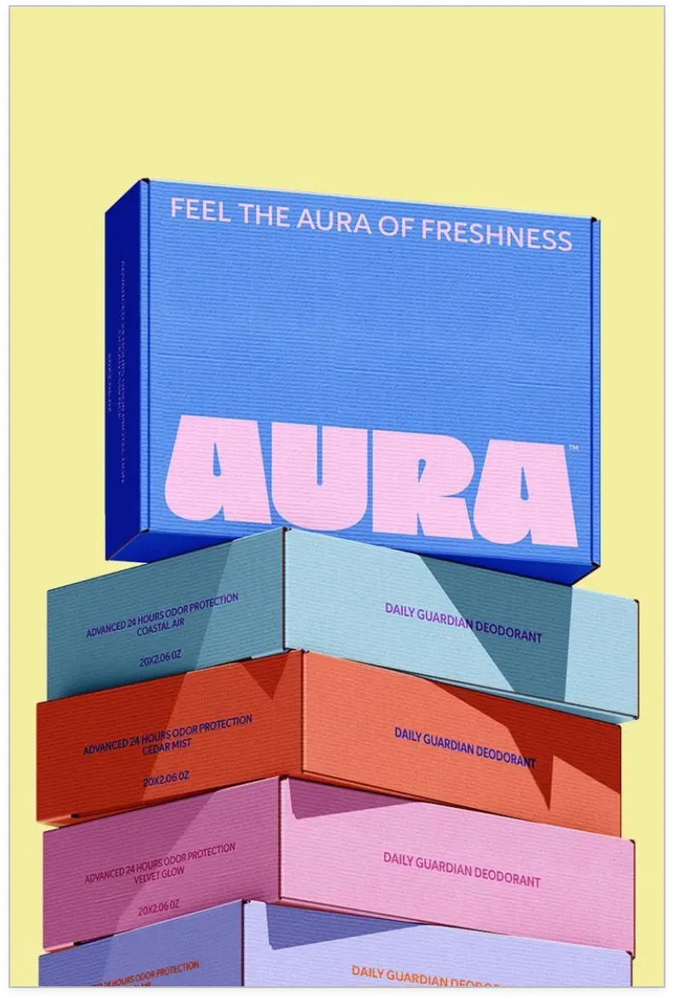
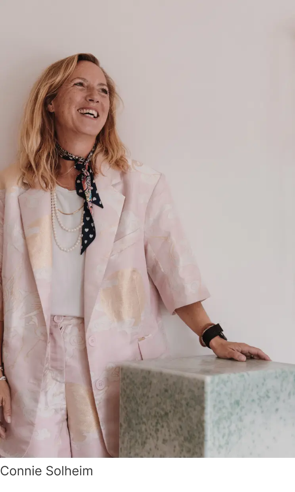

Aura Packaging Design

“My most valuable expertise wasn’t in one specific area — it was in connecting them.”
Connie Solheim studied at Copenhagen Business School, and packaging was certainly not part of the plan. But along the way, she discovered that packaging was never really just about the box.
It was about everything connected to it — the product, the people, the brand, the suppliers, the factories, the logistics and ultimately the customer.
Over the past 15+ years, she has worked across innovation, product development, packaging, sourcing, manufacturing and global value chains at companies including LEGO, GN and Nilfisk.
Each experience added another perspective. And eventually, she realised that her most valuable expertise wasn't in one specific area — it was in connecting them.
That's why she created TÓKI.
Today, TÓKI brings those perspectives together to find the right solution for each challenge — whether that means developing a new product, improving packaging, finding the right supplier or rethinking a process.

Aura Packaging Design

Melts Sustainable Packaging

Office Supplier Network

Mocles Product Development

Studio One Product Design

Oh Belly Physical Experience

Abel Product Concept

Freya Product Example